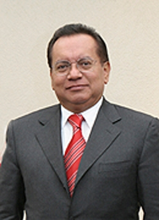

Magistrado Pedro Esteban Penagos López
Nació en San Cristóbal de las Casas, Chiapas, el 28 de marzo de
1951. Hijo de Florentino Penagos Martínez y Candelaria López Ballinas.
Casado con Norma Mireya Ruiz López.
Estudios
Licenciado en Derecho, Universidad Nacional Autónoma de México
(1971-1975). Tesis: Análisis del Contrato Ley de la Industria de la Radio
y la Televisión. Especialización
En el “Juicio de Amparo”, en el Instituto de Especialización
Judicial de la Suprema Corte de Justicia de la Nación, actualmente del
Consejo de la Judicatura Federal, Institución en la que también
cursó el “Diplomado en Derecho Constitucional y Amparo”.Posgrado
Ha concluido los estudios de Doctor en Derecho por Investigación en la División de Estudios de Posgrado de la Universidad Panamericana.
Carrera judicial
Oficial Judicial, Actuario y Secretario del Juzgado Cuarto de Distrito en Materia
Administrativa en el Distrito Federal; Secretario del Tercer Tribunal Colegiado
en Materia Administrativa del Primer Circuito; Secretario de Estudio y Cuenta
del Pleno de la Suprema Corte de Justicia de la Nación; Juez Segundo
de Distrito en el Estado de Oaxaca; Subsecretario General de Acuerdos de
la Suprema Corte de Justicia de la Nación; Magistrado del Primer Tribunal
Colegiado en Materia de Trabajo del Primer Circuito; Magistrado del Quinto
Tribunal Colegiado en Materia Administrativa del Primer Circuito; Magistrado
del Décimo Primer Tribunal Colegiado en Materia Administrativa del
Primer Circuito; y Magistrado de la Sala Regional Cuarta Circunscripción
Plurinominal del Tribunal Electoral del Poder Judicial de la Federación;
a partir del 16 de noviembre de 2006, el Senado de la República lo
nombró Magistrado de la Sala Superior del Tribunal Electoral del Poder
Judicial de la Federación. Ocupa el cargo de Magistrado a partir de
1987. Adquirió inamovilidad judicial en términos del artículo
97 constitucional, el 4 de mayo de 1993. Actividades académicas
Es docente en el Instituto Federal de Defensoría Pública y en
la División de Estudios de Posgrado de la Universidad Panamericana;
y ha sido docente en el Instituto de la Judicatura Federal, en la División
de Educación Continua de la Universidad Nacional Autónoma de
México; en la División de Estudios de Posgrado de la Universidad
Bonaterra en Aguascalientes; en la División de Estudios de Posgrado
de la Universidad Autónoma de Tlaxcala y en la División de Estudios
de Posgrado de la Universidad Panamericana, Sección Guadalajara, actividad
que desempeña eventualmente. Ha sido conferencista en diversos foros
organizados por la Comisión del Distrito Federal del Senado de la República,
el Instituto de la Judicatura Federal, el Tribunal Electoral del Poder Judicial
de la Federación, la Universidad Nacional Autónoma de México,
la Universidad Latina y diversas universidades del interior de la República.Publicaciones
Coautor de la Ley General del Sistema de Medios de Impugnación en Materia
Electoral, Comentada, publicada por la Comisión de Justicia del Senado
de la República y el Colegio Nacional de Magistrados de Circuito y Jueces
de Distrito del Poder Judicial de la Federación, en la que comenta El
Juicio de Revisión Constitucional Electoral; ha publicado los artículos:
La Reforma del Estado y el Sistema Judicial Mexicano y El Juez, la Jurisprudencia
y la Autoridad Administrativa en la Consulta Nacional sobre una Reforma Integral
y Coherente del Sistema de Impartición de Justicia en el Estado Mexicano,
realizada por la Suprema Corte de Justicia de la Nación. Asimismo, se
le publicaron diversas ponencia que en materia electoral, constitucional y
amparo, presentó en Foros realizados por la Comisión del Distrito
Federal del Senado de la República.Otras actividades
Fungió como Coordinador General de los Magistrados del Primer Circuito
en el año de 1988 y como Coordinador de los Magistrados en Materia Administrativa
de dicho Circuito en el año de 1995. Fue integrante de la Comisión
encargada de la Depuración de Tesis en Materia Administrativa para la
publicación de las compilaciones de 1995 y del año 2000, del
Semanario Judicial de la Federación. Miembro Fundador del Colegio Nacional
de Magistrados de Circuito y de Jueces de Distrito del Poder Judicial de la
Federación, Asociación Civil, en la que actualmente funge como
Presidente de la Comisión de Honor y Justicia. Asimismo, es miembro
del Comité Directivo de la Asociación Mexicana de Impartidores
de Justicia (AMIJ) y ha participado como jurado para la evaluación de
aspirantes a Jueces de Distrito y Magistrados de Circuito.Reconocimientos
Ha recibido diversos diplomas y reconocimientos otorgados por el Poder Judicial
de la Federación, la Comisión del Distrito Federal del Senado
de la República, la Universidad Nacional Autónoma de México,
el Colegio Nacional de Magistrados de Circuito y Jueces de Distrito del Poder
Judicial de la Federación, el Tribunal Superior Agrario, la Universidad
Latina, el Instituto de Ciencias Jurídicas de Egresados de la Universidad
Nacional Autónoma de México, Campus Aragón, A.C., la Universidad
de Estudios de Posgrado en Derecho, A.C., el Instituto de Estudios Superiores
en Derecho Penal, la revista jurídica “Primera Instancia”,
las universidades de Aguascalientes, Chiapas, Coahuila, Colima, Durango, Hidalgo
y Tlaxcala, la Barra Mexicana Colegio de Abogados, el Tribunal Electoral del
Distrito Federal, el Club Rotario San Ángel, Universidad Autónoma
de Chiapas y los Institutos Electorales de Querétaro y Morelos.